One in three adult New Yorkers says they need more money to afford enough food. Among families with children it is more than 40 percent, according to the Robin Hood Poverty Tracker. 's stricter measure puts about 1.4 million residents, 16.8 percent of the city, as in 2023. In the Bronx it was 22.6 percent (NYC Food by the Numbers 2025).
Plenty of these households work. A family of four needs more than $125,000 a year to cover basic costs here, and federal benefits cut off near $33,000 (City Harvest). About 30 percent of food-insecure households earn too much for . When rent, childcare and the ConEd bill come due, food is often where cash-strapped families find savings.
So here is a floor. I'm calling it UNYC, for universal New York City. Every resident can walk into a grocery store and leave with rice and beans without paying, without showing anything, and without anyone asking why.
The plan in one paragraph
The city buys rice and in bulk from mills and importers, to its own . Contract packers bag them in UNYC packaging. Distributors carry the bags on their normal routes and get paid a fee per pound delivered. They never own the product, so there is no markup to inflate. Stores above a size threshold must carry the bags, ring them up as a $0 item and absorb the handling. , pantries and soup kitchens can opt in. Licensed food vendors can get their own supply in exchange for selling a cheap . The whole thing would move about 390 million pounds of food a year.
| Line | Annual cost |
|---|---|
| Food, packed and delivered to a city warehouse | $196M |
| UNYC packaging | $6M |
| Distribution to stores, pantries and vendors | $55M |
| Overuse and allowance (10% of the lines above) | $26M |
| Administration | $34M |
| Total | $316M |
Those are central estimates from the cost model, which prices every line from USDA purchase prices, state distribution fees and city payroll data. Allowing for uncertainty in every input, the total most likely falls between $290 and $350 million. That is about 0.25 percent of the city's $124.7 billion budget, or $37 per resident per year. For comparison, federal SNAP benefits in the city totaled $5.1 billion in fiscal 2025. This program would be about 6 percent of that.
Why rice and beans, and not a basket
Rice and beans are not a complete diet, and the program doesn't pretend otherwise. The point is a floor: enough that nobody in the city goes hungry while they sort out everything else.
Together they make a . Rice is low in lysine and beans are low in methionine, and each covers the other. A pound of dry rice has about 1,600 calories. A pound of dry beans has about 100 grams of protein, plus fiber, folate, iron and potassium. What they lack (vitamin C, B12, calcium, fat) mostly arrives with whatever they are cooked with. Nobody eats them plain. They become habichuelas guisadas, dal, rajma chawal, moros y cristianos. The program covers the base of the plate and leaves the onions, peppers, oil and eggs to household budgets, SNAP, and the pantries.
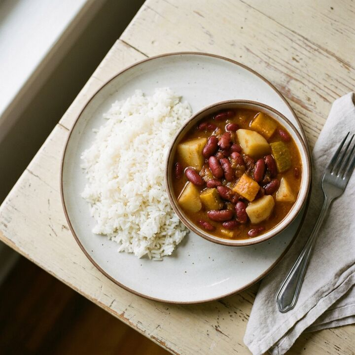
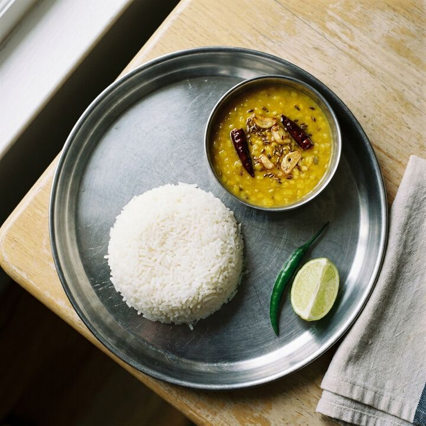
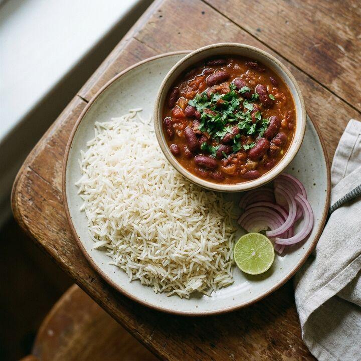
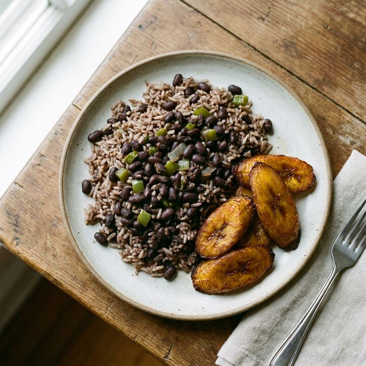
The practical case is stronger than the nutritional one. Dry rice and beans keep for a year without refrigeration, so almost nothing spoils. A dollar buys about 4,500 calories of long-grain rice at USDA's delivered price. Nearly every kitchen in the city already uses them: Latin American, Caribbean, South Asian, East Asian, West African and Middle Eastern households cook rice and pulses daily. And a cheap, bulky staple has almost no resale value, which keeps cheating small without an enforcement budget.
Every alternative loses on one of those counts. Bread spoils in days and pasta carries less protein. Potatoes and produce are heavy and perishable. Canned goods cost more per serving. A broad grocery basket multiplies the cost, and the mayor's planned municipal grocery stores already try that at a discount. Cash already exists. It's called SNAP, and it misses the 30 percent of struggling households who earn too much.
"Beans" here means pulses: beans, lentils, chickpeas, split peas, and mung beans, all dry and unflavored. That matters. Lentils and chickpeas are the everyday legume in South Asian, Middle Eastern and Ethiopian homes, and New York State counts about 125,000 Bangladeshi and 97,000 Pakistani residents, most of them in Queens (NYS DOL). A beans-only rule would give those families rice and nothing they cook with it. Rice covers long-grain, medium, short, jasmine, basmati, and brown, bought at standard grade. Aged basmati, organic lines and imported Japanese short-grain stay on the regular shelf at regular prices.
How much the city eats, and what it costs
New Yorkers eat roughly 290 to 340 million pounds of dry rice and 110 to 130 million pounds of dry pulses a year. That is about 1.2 million pounds a day, or around 30 tractor-trailer loads.
The rice number starts from USDA's figure of about 21 pounds per American per year for food use (USDA). New York eats more than that because of who lives here. Survey data in Choices shows Asian Americans account for 31 percent of U.S. rice demand and Hispanic Americans 27 percent. Reweighted to the city, which is 28 percent Hispanic and 16 percent Asian, the multiplier comes out near 1.6, or about 34 pounds per person. Restaurant rice is already inside that figure. For scale, about 19 billion pounds of food a year reach the city's 42,000 food outlets (City Limits). This program would be about 2.4 percent of it.
Packed in plain bags and delivered by the truckload, the food itself runs about $196 million a year at USDA's own estimated prices for the same products (USDA FNS). Long-grain white rice is 28 to 35 dollars per hundred pounds at the mill (USDA AMS). Split peas pay growers 11 cents a pound, pinto and black beans 22 cents (USDA RMA). Imported jasmine and basmati cost about half again as much as domestic long-grain once they land, but per quarter-cup serving the whole range runs from 4 cents to 9. The rice blend moves the budget far more than any choice of bean. Two conditions matter right now: U.S. rice is expensive after a 39-year-low crop (USDA ERS), and pulse prices are soft.
Running it costs about $34 million a year. Half of that is roughly 110 city staff for procurement, contracts, audits and field checks, priced from city payroll data with benefits. The rest covers lot inspection at USDA's published fees, a reporting portal, outreach, a legal reserve, and mobile trucks and pickup lockers for food deserts. Two costs are left out by design. Stores absorb handling, which would run about $2 to $12 million a year if the city paid for it at . And nobody enrolls, which is the bigger saving. For a sense of what enrollment costs, , the city's ID card, has reached about a quarter of eligible residents in 11 years on a $17.9 million budget with 175 staff (IDNYC). Carding 8.5 million people would likely cost more than this program's entire administrative budget.
Picking it up
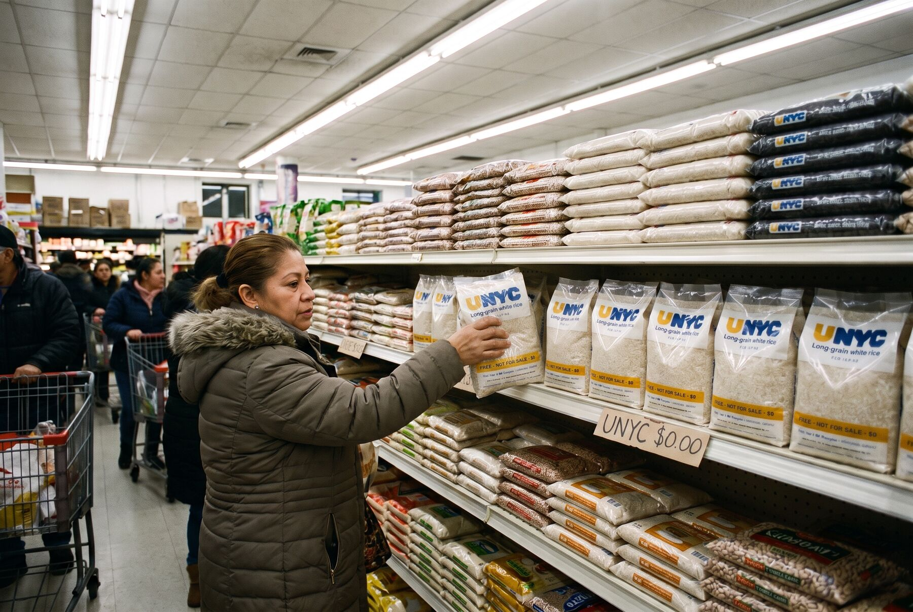
The city had 984 grocery stores as of November 2025. Every one above a size or revenue threshold would carry UNYC bags. You take one off the shelf, it scans at $0, and you go. There is a per-transaction limit at the register, and that is the only cap on residents. About 13,000 bodegas can opt in, along with the city's 604 pantries, 90 soup kitchens and pickup lockers in neighborhoods without a supermarket.
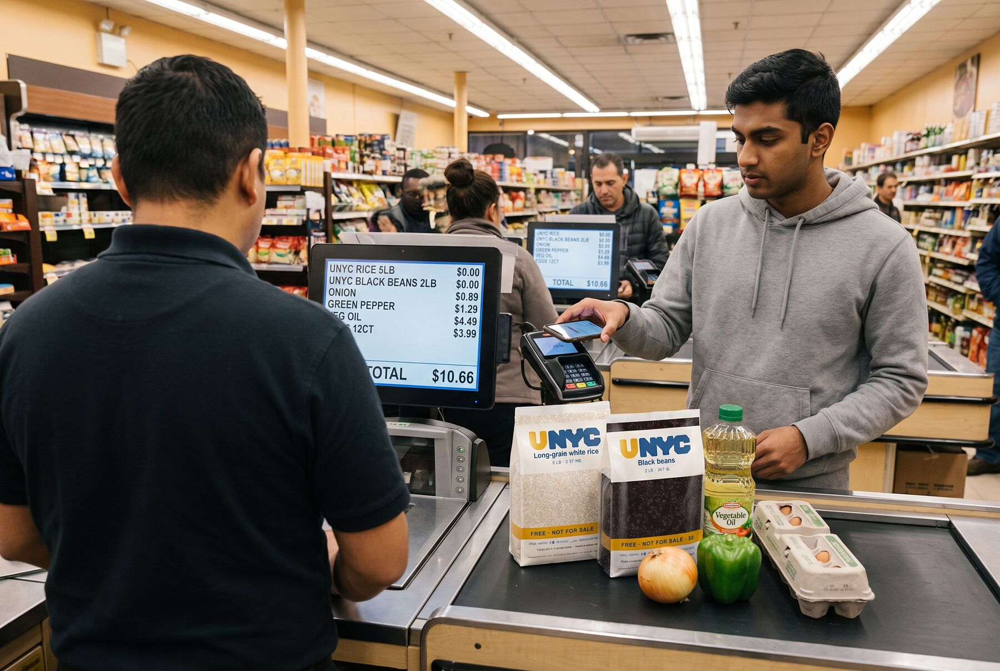
No money changes hands at the store, which removes most of the reasons to cheat. Stores confirm each delivery and report weekly give-aways from their register data. Those reports set the next shipment: roughly the last two weeks of give-aways plus a small buffer. Egypt's bread subsidy is the warning here. When it switched from allotting flour to paying bakeries per verified sale, consumption in the early provinces fell 15 to 35 percent (Jordan Times/Reuters), which says a lot about where the flour had been going. UNYC never pays a store per bag, so there is no count to pad.
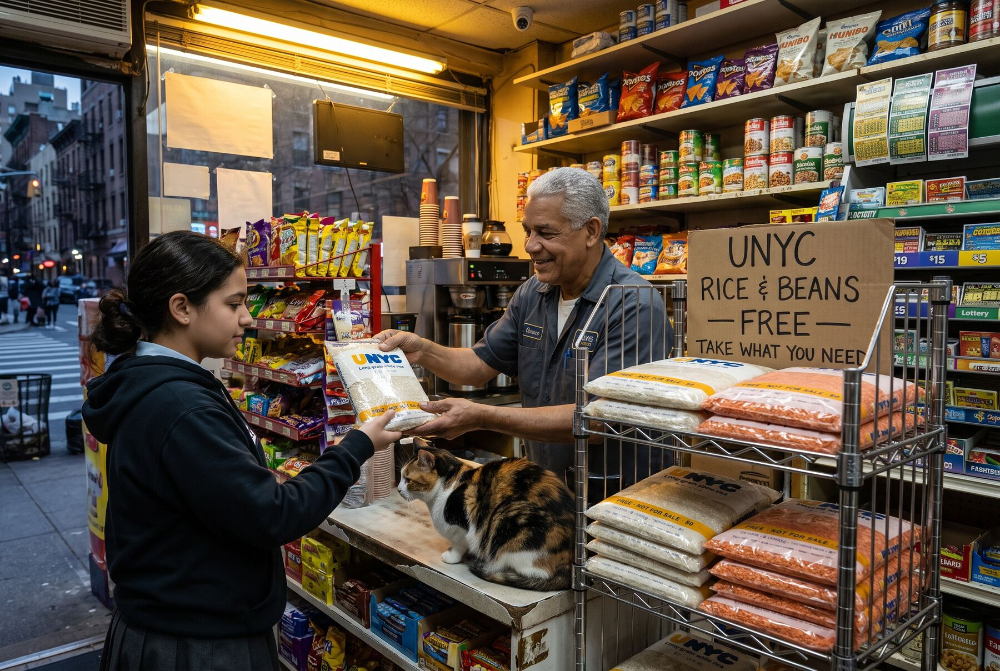
The bag does the enforcing
The packaging carries a surprising share of the fraud prevention. Anyone handed a UNYC bag knows it was free, so a shop trying to sell one gets caught by its own customers. Selling it quietly means paying to rebag it, which wipes out the profit on a staple worth under a dollar a pound. Petty fraud stops without an inspector.
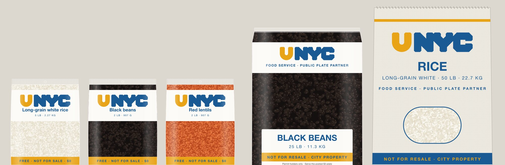
The bags are clear film with three screen-printed inks, the cheapest package that works. A white top panel carries the mark and the variety. The middle is left clear, so the rice or lentils are the label, and one set of plates covers every variety with only the name changing. The bottom band says FREE · NOT FOR SALE · $0, then "free" in six more languages, cooking directions, a lot number and "Paid for by New Yorkers." The food-service bags say NOT FOR RESALE · CITY PROPERTY, because a restaurant is allowed to cook with them and not allowed to pass them on.
Once the bags get home, cooking a year's worth in a rice cooker and a pressure cooker takes about 12 per person, or $3.60 to $4.80 at 's rates.
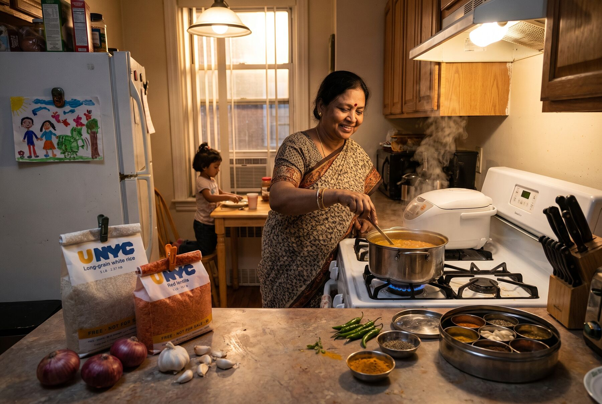
The public plate
Giving away food for free creates a negative incentive for restaurants that must be addressed. The city has over 24,000 of them and 5,000 mobile vendors (USDA NAL), and a halal cart or a Dominican lunch counter could quietly fill its kitchen from grocery shelves. A shop going through 100 pounds a day would save about $15,000 a year. Policing that would be expensive and unnecessary. Letting them in openly is cheaper.
Any vendor with a Health Department permit can opt in. They get UNYC stock delivered with their normal orders, capped monthly by permit type and seat count so a 12-seat spot can't order like a banquet hall. In exchange, they post a plate of rice and pulses at around $3, which uses about a third of a pound of dry staples. The health inspector checks that the plate is posted on the visits they already make.
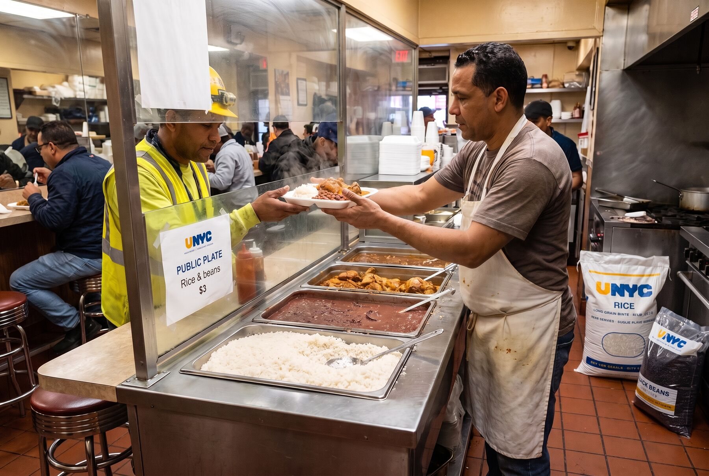
What that buys is a hot-meal network. Shelter residents, people in buildings and anyone else without a kitchen get cooked food, and carts reach blocks that supermarkets don't. Most restaurant rice is already inside the volume estimate, so vendor participation mostly changes where the rice gets cooked. Over-ordering and chains drawing huge volumes are the risks to watch, and a per-company cap handles the chains.
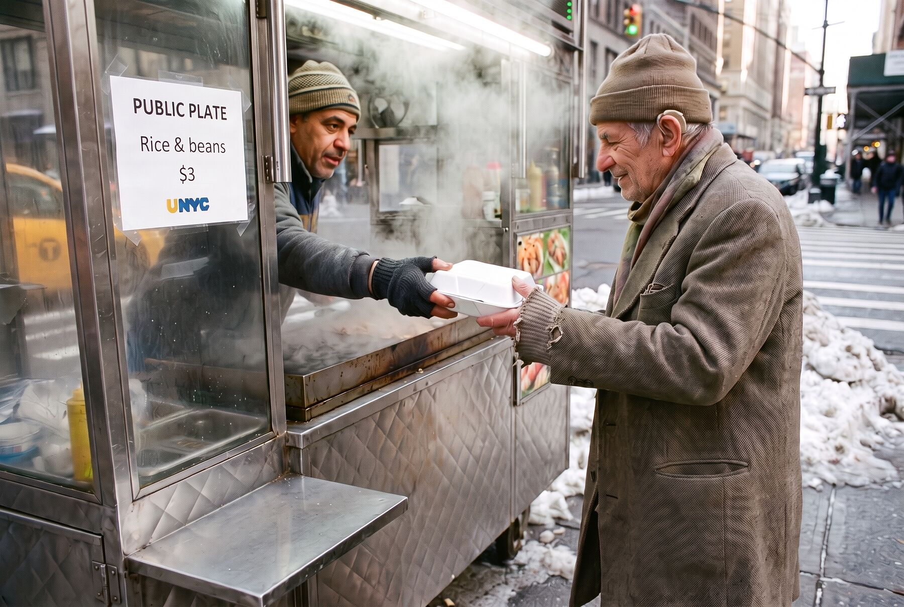
Who loses
The big brands lose some regional sales and survive. The businesses that could close are small and New York-dependent: regional importers of parboiled rice, pigeon peas, basmati and lentils for Caribbean, West African and South Asian stores; repackers whose whole margin is bagging bulk rice for bodegas; sold mostly on city shelves. Specialty grocers built around 20-pound rice bags lose an anchor product but keep spices, produce and meat, and opting in keeps people coming through the door.
City purchasing decides most of this. The city could hire those same local repackers to bag UNYC stock, give small importers a procurement preference and phase the program in over a year or two. Meanwhile the complements gain. Money a household stops spending on rice tends to go to oil, onions, sofrito, adobo, eggs and meat, which offsets part of what grocers lose.
The fight is already visible. The mayor's five planned city-owned grocery stores, starting at The Peninsula in Hunts Point and La Marqueta in East Harlem, have drawn complaints from bodega owners about unfair competition (Vital City). On September 9, 2026, the National Supermarket Association sued in federal court, calling the plan a tax-subsidized predatory pricing scheme (Bloomberg Law). UNYC would draw the same argument at a larger scale.
What the other side will propose
Incumbents will push alternatives that route public money through the existing market, and each one has a real case. Expanding SNAP keeps retail margins and full choice, but SNAP is federal, so a city top-up needs its own means test, and it still misses the 30 percent who earn too much. Vouchers for any rice and beans at retail keep every brand whole, but retail rice costs roughly three times the , so the same dollar buys a third of the food. Funding pantries uses a trusted network, but 604 pantries with limited hours are not 984 supermarkets and 13,000 bodegas, and pantries carry a stigma the checkout lane doesn't. Tax breaks for stores in food deserts fix access and not price, one store at a time over years.
They have a point about choice, and UNYC offers two items. It also asks stores to absorb handling that New York's bottle bill pays them 3.5 cents a container to do. The strongest framing is a complement: a universal floor at the lowest cost per pound, with SNAP, pantries and the market above it. That makes an either-or fight harder to win.
It has been done, in pieces
Free staple rations run at national scale elsewhere. India's PMGKAY gives 5 kg of free grain a month to 813.5 million people through ration shops, extended to December 2028 (Deccan Herald). Cuba's libreta has handed out subsidized rice and beans since 1962; supply shortfalls broke it, not the ration design (Diario de Cuba). New York already runs one universal food program with no means test. Free school lunch dropped the income forms in 2017 for 1.1 million students, precisely to end the stigma and paperwork (NYC DOE). Nothing I found combines free staples with private retail pickup and no ID.
On the law, requiring stores to carry a product and regulating its price both have precedent. Minneapolis has required licensed grocers and corner stores to stock beans, peas and lentils since 2008 (City of Minneapolis). Nebbia v. New York upheld the state's minimum milk price in 1934. The exposed pieces are elsewhere. New York City only has the powers Albany delegates, Albany already blocked the city's plastic bag fee, and a pending bill, A10801, would limit municipal authority over grocery prices. Making stores absorb handling for free is the part most likely to be called a . Two moves would firm it up: state enabling legislation, and a small handling fee modeled on the bottle bill, which would add about $2 to $12 million a year.
None of this is legal advice. A real program would need the city's lawyers.
What's still open
- The size threshold for mandatory grocers: square footage, revenue or register count.
- The per-transaction cap, and whether to add a hashed ID scan with a weekly limit.
- The public plate price. What should it cost, and what effect does it have on a vendor's economics?
- How long the phase-in runs, and how much preference small importers get.
- Whether to add plain canned beans for people with no kitchen at all.
The number I keep returning to is $37 per resident per year. For that, nobody in the city has to go without dinner, and nobody has to fill out a form or explain themselves to get it.
UNYC is a speculative proposal, not a city program. The photographs are generated illustrations of the packaging in use; the people in them are not real. This proposal has not been independently validated. If you would like to help this idea take the next steps, email Brian at this domain.
This proposal was researched and co-written using Claude Opus 5.5. All photorealistic images were generated with Nano Banana Pro. The figures in the cost table, with their sources and datasets, are on the cost model page.
Sources
- Robin Hood: Dinner or the Light Bill, November 2025
- City Harvest: Child Hunger Report, Spring 2026
- NYC Mayor's Office of Food Policy: Food by the Numbers 2025
- Choices: Who (Will) Eat Rice in the United States? (2024)
- USDA: Newly Updated Food Availability Data
- USDA ERS: Vegetables and Pulses Outlook, April 2025
- USDA ERS: Rice Market Outlook
- USDA AMS: Weekly National Rice Summary
- USDA AMS: Dry Edible Beans Daily Grower Bids
- USDA RMA: 2025 Dry Bean and Dry Pea Harvest Prices
- City Limits: Hunts Point food hub
- NYS Department of Labor: AAPI Heritage Month 2026
- IDNYC Q1 2026 Quarterly Report
- USDA NAL: NYC restaurants and mobile vendors
- Vital City: Mamdani's city-run grocery stores
- Bloomberg Law: City grocery plan lawsuit, September 2026
- Deccan Herald: PMGKAY extended to 2028
- Diario de Cuba: The ration book, from dependence to hunger
- Jordan Times/Reuters: Egypt smart cards for bread, 2015
- NYC DOE: Free School Lunch for All, 2017
- City of Minneapolis: Staple foods ordinance
- Nebbia v. New York (1934)
- NY Assembly Bill A10801
- Outage Pro: New York electricity rates, May 2026